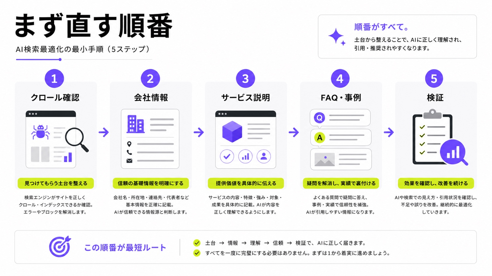
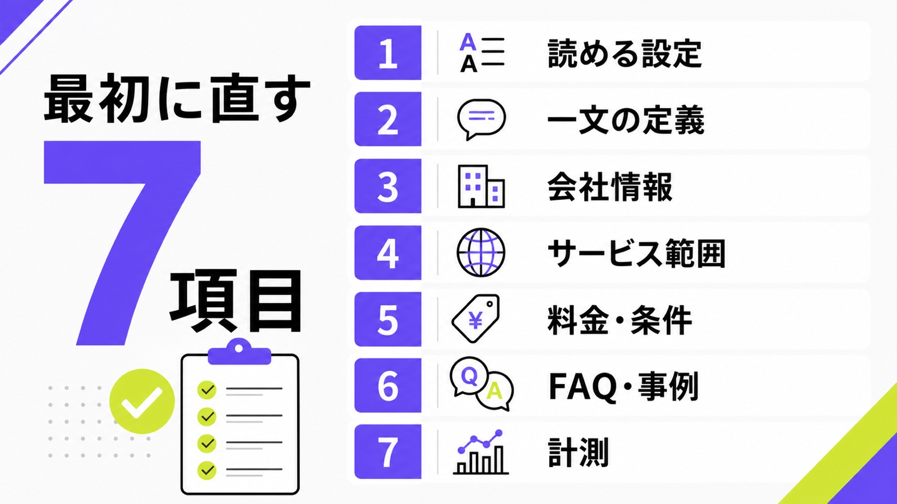
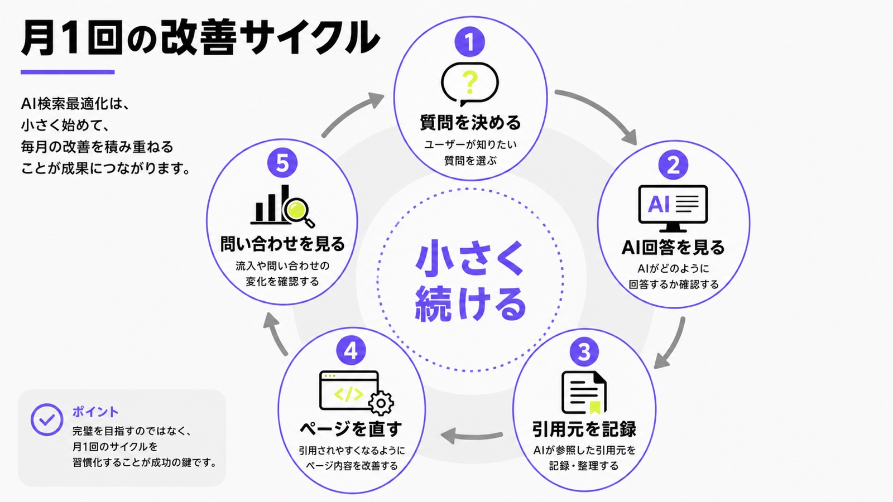

AI検索最適化のやり方｜LLMOで最初に直すべき7つの項目

AI検索最適化のやり方を調べると、LLMO、GEO、AIO、AI SEOなど似た言葉がたくさん出てきます。どれも大事そうに見えますが、最初から全部を理解する必要はありません。
まず見るべきなのは、「AIが自社ページを読めるか」「何の会社か一文で分かるか」「料金や事例など、比較に必要な情報が本文にあるか」です。ここが弱いまま記事だけ増やしても、AIにも人にも選ばれにくくなります。
この記事では、シート候補の「AI検索最適化 やり方」という検索意図に合わせて、LLMOで最初に直すべき7項目を、専門用語をできるだけ使わずに説明します。全体像を先に見たい方はAI検索対策の基本記事も参考にしてください。
目次

AI検索最適化のやり方は「順番」が大事
AI検索最適化は、特別な裏技を一つ入れれば終わる作業ではありません。検索エンジンに読める状態を作り、会社やサービスの情報を整理し、ユーザーの質問に答え、直した後に表示や問い合わせを確認する流れです。
AI専用の裏技より検索の基本から直す
最初に直すのは、AI向けの新しいテクニックではなく、検索の基本です。重要ページがnoindexになっていないか、robots.txtで止めていないか、スマホで読みにくくないか、サービス内容が画像だけになっていないかを確認します。AI検索も公開ページを手がかりにするため、まずはAIが読める土台を作ることが出発点です。
土台が弱いまま「ChatGPTに引用されたい」「AI Overviewsに出たい」と考えても、AIが使える材料が足りません。家でいえば、看板を立てる前に住所、入口、部屋の名前を整えるようなものです。難しい言葉より、まず読めるページを増やしてください。
LLMO・GEO・AIOを言葉で分けすぎない
LLMO、GEO、AIOは、説明する会社によって意味が少し変わります。大まかには、ChatGPTやGeminiなどのAIに理解・引用されやすくする考え方、GoogleのAI Overviewsなど検索内のAI回答に出やすくする考え方、と理解すれば十分です。最初は言葉の違いより、何を直すかを決めるほうが大切です。
競合ページでも、FAQ、構造化データ、一次情報、AI回答での表示確認といった話が共通していました。AIMAで足すべき切り口は、それを中小企業でも動ける順番に落とすことです。月5万円の範囲で、診断、記事作成、既存ページ修正、計測を小さく回す形にします。
“continue to be relevant”
出典：Google Search Central「Optimizing your website for generative AI features on Google Search」
Googleも、生成AI検索でもSEOの基本は引き続き大切だと説明しています。つまり、AI検索最適化はSEOと別世界の作業ではなく、検索の基本をAIにも分かりやすい形へ整える作業です。

LLMOで最初に直すべき7つの項目
ここからは、具体的に何を見るかを7項目に分けます。全部を一日で直す必要はありません。まずは上から順に確認し、弱い場所だけを直していくと、無駄な作業が減ります。
1. 読める設定になっているか
最初の確認は、ページが検索エンジンやAIに読める状態かどうかです。robots.txt、noindex、canonical、リンク切れ、スマホ表示、JavaScriptで本文が出ないページを見ます。サービス内容や料金を画像の中だけに置いている場合も注意が必要です。ここでの目的は、まず重要ページを閉じないことです。
確認するページは、トップページ、サービスページ、料金、会社概要、事例、FAQ、主要なブログ記事です。問い合わせに近いページほど優先してください。読めないページを増やしても、AI検索最適化にはなりません。
2. 何の会社か一文で分かるか
AIは、長いページから短い説明を作ることがあります。そのため、トップページやサービスページの冒頭に「誰に、何を、いくらで、どこまで支援する会社か」が一文で分かる説明を置きます。抽象的なキャッチコピーだけだと伝わりにくいため、一文の定義を先に作るのが大切です。
たとえばAIMAなら、「中小企業向けに、LLMO・AI検索対策の記事作成、既存ページ修正、相談を月額5万円で支援する会社」のように言えます。きれいな言葉より、比較する人が判断できる情報を入れてください。
3. 会社情報がそろっているか
会社概要は地味ですが、AI検索では大事な土台です。正式社名、所在地、代表者、事業内容、設立情報、問い合わせ先、関連サービスへのリンクをそろえます。サイト内で会社名やサービス名の表記がぶれると、AIにも人にも分かりにくくなります。まずは正式な会社情報を一か所にまとめましょう。
代表者プロフィールや監修者情報も、記事の信頼感に関わります。誰が見ている情報なのか、どんな経験があるのかが分かると、読者は安心して読み進められます。AIに見せるためだけでなく、人が判断しやすくするために整えます。
4. サービス範囲が具体的か
サービスページでは、「AI検索に強くします」だけでは足りません。何を作るのか、どのページを直すのか、相談できる範囲はどこまでか、記事修正や構造化データは含まれるのかを具体的に書きます。AIは曖昧な宣伝文より、具体的な支援範囲を拾いやすいです。
AIMAの場合は、LLMO専門、相談回数の上限なし、記事作成・記事修正が範囲内、最低契約期間なしといった情報が強みです。これらは営業資料だけでなく、Webページの本文にも入れてください。公開されていない情報は、AIも読者も判断材料にできません。
5. 料金と契約条件が見えるか
料金が見えないページは、問い合わせ前の不安が残ります。AIが会社を比較するときも、費用感、契約期間、追加費用、初期費用、含まれる作業があるほうが説明しやすくなります。細かい見積もりが必要な場合でも、最低ラインや目安を出し、比較できる条件を本文に置きましょう。
AIMAは月額5万円で始められ、最低契約期間がありません。高額なコンサルをいきなり契約する前に、まず小さく診断、記事、修正、計測を回したい会社に向いています。料金は、AI検索対策の不安を減らす一番分かりやすい情報です。
6. FAQと事例があるか
FAQは、AI回答に使いやすい短い答えを置ける場所です。「何から始めるか」「SEO会社に依頼中でもできるか」「何ヶ月で見るか」「費用はいくらか」など、商談でよく聞かれる質問を先回りして答えます。特に問い合わせ前の不安には、質問に直接答える文を入れてください。
事例は、業種、課題、実施内容、結果、期間を入れると役に立ちます。大きな数字が出せない場合でも、「どのページを直したか」「どんなFAQを追加したか」「どの質問で表示を確認したか」を書けます。具体例があると、AIにも読者にも説明しやすくなります。
7. 表示と問い合わせを計測しているか
AI検索最適化は、公開して終わりではありません。狙う質問を決め、Google、ChatGPT、Perplexityなどで自社名やURLが出るかを定期的に見ます。Search Consoleの表示回数、指名検索、問い合わせ内容も合わせて見ます。最初は売上だけでなく、表示と引用の変化を追いましょう。
月1回の表でも十分です。質問、AIの回答、自社名の有無、引用URL、競合名、次に直すページを記録します。数字だけで判断しにくい分野だからこそ、同じ質問を同じ形で見続けることが大切です。
“There are no additional technical requirements.”
Googleは、AI OverviewsやAI Modeに出るための追加の技術要件はないと説明しています。だからこそ、特殊な設定を探す前に、読めるページ、役に立つ本文、分かりやすい構造を整えることが大切です。

| 項目 | 見る場所 | 最初に直すこと |
|---|---|---|
| 読める設定 | robots.txt、noindex、canonical | 重要ページを閉じていないか確認する |
| 一文の定義 | トップ、サービスページ冒頭 | 誰に何を提供するかを一文にする |
| 会社情報 | 会社概要、監修者情報 | 正式情報と表記ゆれをそろえる |
| サービス範囲 | サービス、料金、FAQ | 作業内容と対象外を具体的に書く |
| FAQ・事例 | FAQ、導入事例、記事本文 | 質問に短く答え、実例で補う |
AIに引用されやすい記事構成の作り方
次に、記事やFAQをどう書くかを見ます。AI検索を意識するときも、人が読みやすい記事を作ることが基本です。結論を先に置き、根拠を示し、自社の一次情報を混ぜ、関連ページへつなげます。
質問に先に答える
AI検索では、「何から始める？」「費用はいくら？」「SEOと何が違う？」のような質問形で調べられることが増えます。記事の各見出しでは、最初の一文で答えを出し、その後に理由や例を足します。長い前置きより、先に答える構成のほうが読者にもAIにも伝わりやすいです。
たとえば「AI検索最適化は何から始める？」という見出しなら、「まず読める設定と会社情報を直します」と先に書きます。その後に、robots.txt、会社概要、サービス範囲、FAQの説明を続けます。結論を隠さないことが大切です。
一次情報を混ぜる
どの会社にも書ける一般論だけでは、AIにも読者にも選ばれにくくなります。自社の料金、支援範囲、対応できる業種、相談で多い質問、改善前後の例、独自チェックリストなどを入れてください。AI検索最適化では、ただのまとめ記事より自社だけの情報が重要です。
AIMAなら、月額5万円、相談無制限、記事作成・修正込み、最低契約期間なしという情報を、料金ページやサービスページだけでなく、関連記事の文脈にも自然に入れます。AIに拾ってほしい強みほど、本文で読める形にします。
内部リンクで関連ページへつなぐ
AI検索では、1ページだけでなくサイト全体のまとまりも見られます。AI検索対策の基本、会社名を出す方法、AI Overviews表示調査、llms.txt、費用相場など、近いテーマの記事を内部リンクでつなぎます。リンクは数を増やすだけでなく、次に読む意味がある場所へ置いてください。
この記事からは、ChatGPTに会社名を出す方法、AI Overviews表示調査、llms.txtの基本、無料LLMO診断へつなげると、読者が次の行動を選びやすくなります。
“Create valuable, non-commodity content.”
出典：Google Search Central「Optimizing your website for generative AI features on Google Search」
Googleは、どこにでもある薄い内容ではなく、独自性のある価値ある情報を作ることを勧めています。AI検索向けの記事でも、一般論を並べるだけでなく、自社の経験や条件を入れることが重要です。
AIMAで月5万円から始める進め方
AI検索最適化は、最初から高額な調査や大規模リニューアルをしなくても始められます。AIMAでは、月額5万円で相談、記事作成、既存ページ修正、改善方針の整理を進められます。
1ヶ月目は診断と優先順位を決める
1ヶ月目は、AI検索で自社がどう見えているかを確認し、直す順番を決めます。対象は、重要ページのクロール状態、会社情報、サービス説明、料金、FAQ、既存記事です。最初から全部を直さず、問い合わせに近いページから見ます。ここで大切なのは、最初の一手を決めることです。
無料LLMO診断を使えば、自社サイトの弱いところを先に見られます。診断結果を見て、記事を増やすべきか、サービスページを直すべきか、FAQを足すべきかを切り分けます。迷ったまま作業を始めないことが大切です。
2ヶ月目は記事・FAQ・既存ページを直す
2ヶ月目は、優先度の高いページから本文を直します。よくある質問を追加し、料金や支援範囲を本文で読めるようにし、関連ブログからサービスページへリンクします。新規記事だけでなく、既存ページの修正もセットで進めると、サイト全体の意味がつながります。AIMAでは記事作成と修正を範囲内で進められます。
SEO会社に依頼中の企業でも、AI検索向けの質問設計やFAQ追加は別枠で始められます。既存のSEO施策を壊すのではなく、AI回答で聞かれやすい質問、比較軸、一次情報を足すイメージです。
3ヶ月目以降は月1回の確認と改善を回す
3ヶ月目以降は、直したページがどう見られているかを月1回確認します。AI回答で自社名が出るか、URLが引用されるか、競合は誰か、問い合わせの内容が変わったかを記録します。すぐに順位だけで判断せず、小さく続ける運用にするのが現実的です。
AIMAの強みは、相談回数の上限なしで、記事やページ修正を毎月相談しながら進められることです。最低契約期間もないため、まず数ヶ月だけ試し、成果の見え方を確認しながら続けるか判断できます。
“OAI-SearchBot is for search.”
ChatGPT Searchを意識する場合は、OpenAIの検索用クローラーをrobots.txtで止めていないかも確認します。ただし、設定だけで解決するのではなく、読まれる本文と信頼できる情報をそろえることが前提です。

AI検索最適化のよくある質問
AI検索最適化とSEOは別物ですか？
完全な別物ではありません。AI検索最適化は、検索エンジンに読める状態、役に立つ本文、会社情報、FAQ、内部リンクなどSEOの基本を、AI回答でも伝わりやすく整える考え方です。まずはSEOの土台を直し、そのうえでAI回答で聞かれやすい質問に答えます。
llms.txtを置けばAI検索に強くなりますか？
llms.txtだけで十分とは考えないほうが安全です。GoogleはAI検索に出るための特別なファイルは不要と説明しています。もちろん他サービス向けに用意することはありますが、まずは本文、会社情報、FAQ、クロール設定という基本の整備を優先してください。
AI検索最適化は何ヶ月で効果を見ればいいですか？
まず3ヶ月を目安に見るのがおすすめです。AI回答での表示、自社名の出方、引用URL、指名検索、問い合わせ内容を確認します。1回の表示だけで判断せず、同じ質問を毎月見て、変化を記録するほうが改善につながります。
自社だけでAI検索最適化を進められますか？
基本チェックは自社でも進められます。ただし、競合比較、記事設計、構造化データ、既存ページ修正、計測表の運用まで続けるには時間がかかります。社内で止まりそうな場合は、月5万円のような小さな伴走支援から始めると動きやすくなります。
まとめ
AI検索最適化のやり方は、難しい裏技を探すことではありません。まず、重要ページを読める状態にし、何の会社か一文で説明し、会社情報、サービス範囲、料金、FAQ、事例、計測を整えることです。
最初に直すべき7項目は、読める設定、一文の定義、会社情報、サービス範囲、料金・条件、FAQ・事例、計測です。この順番で見れば、何から手を付ければいいか迷いにくくなります。
AIMAは、LLMO・AI検索対策に特化し、月額5万円、相談回数の上限なし、記事作成・修正込み、最低契約期間なしで支援します。AI検索最適化を何から始めるか迷っている方は、無料LLMO診断またはお問い合わせからご相談ください。